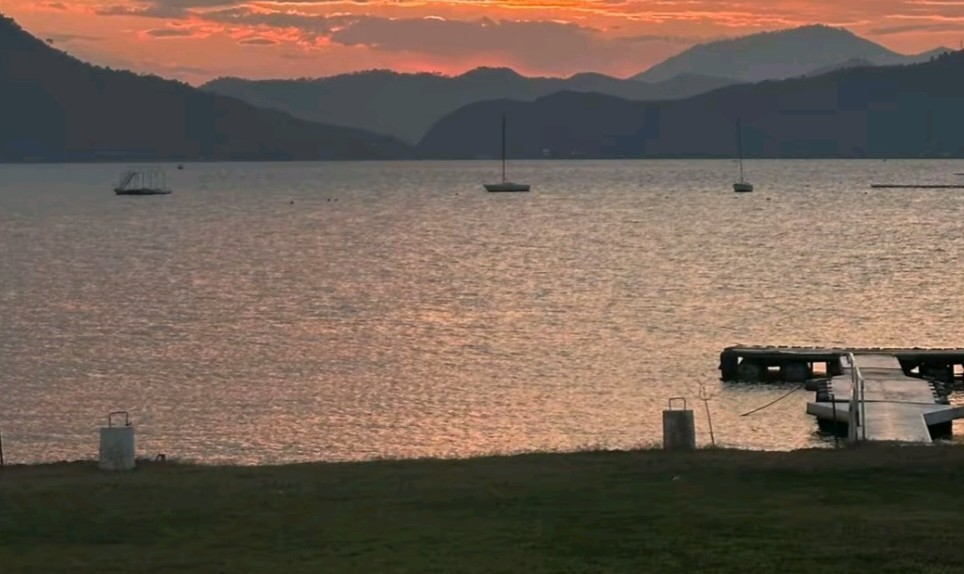
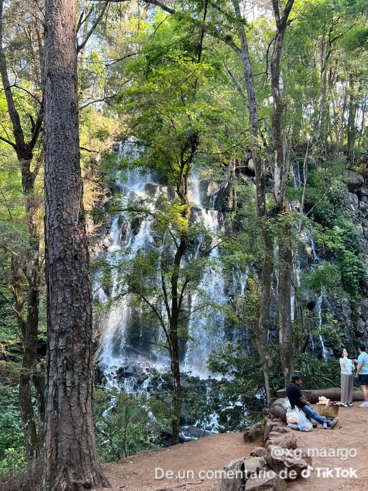

“La laguna de valle de bravo, conocida comunmente como el largo de valle de bravo, es uno de los lugares principales atractivos y turisticos de este pueblo magico del estado de Mexico. El lago genera actividad economica para el municipio mediante los paseos en enbarcacines,los servicios turisticos ,los restaurantes y el hospedaje.”
“Ademas es parte esencial del paisaje que caracteriza a Valle de Bravo como Pueblo Magico. Su consevacion es importante por que el agua tambien cumple una funcion de abastecimiento. por ello, se recomienda no arrpjar basura,respetar las indicaciones de seguridad y cuidar los ecosistemasque rodean el lago”
"La leyenda de la "Casa Quemada": El imaginario popular y las crónicas locales relatan que, a mediados del siglo XX (hacia la década de 1930), la zona albergó un refugio o centro improvisado para enfermos de tifoidea."
Ante el temor del contagio y las creencias de la época, los pobladores prendieron fuego al sitio. Aunque la estructura sobrevivió con daños parciales, el acontecimiento dio origen a mitos sobre supuestas apariciones y lamentos alrededor de la laguna."

1. Caminatas por el bosque: puedes recorrer senderos rodeados de árboles, respirar aire fresco y disfrutar del sonido del agua.
2. Observación de la naturaleza: el parque permite apreciar la vegetación, las rocas y el entorno boscoso característico de la región.
3. Fotografía turística: es un lugar excelente para capturar imágenes de la caída de agua, los paisajes verdes y los miradores.
4. Convivencia familiar: sus áreas naturales son apropiadas para pasar un rato tranquilo, descansar y disfrutar del paisaje, respetando las reglas del parque.
DATOS TURISTICOS IMPORTANTES
Ubicación: Avándaro, Valle de Bravo, Estado de México.
Altura: aproximadamente 35 metros.
Entorno natural: bosque de pinos y oyameles, vegetación y corrientes de agua.
Acceso: se encuentra aproximadamente a 20 minutos en automóvil del embarcadero municipal.
Atractivo principal: la caída de agua blanca que parece un velo descendiendo entre la vegetación.
¿Por qué se llama Velo de Novia? Su nombre se debe a que la caída del agua forma una cortina blanca que recuerda al velo que lleva una novia. También circulan leyendas locales relacionadas con historias de amor, aunque estas forman parte de la tradición oral y no deben confundirse con hechos históricos comprobados. Importancia turística.
La Cascada Velo de Novia es uno de los atractivos naturales más conocidos de Valle de Bravo. Contribuye al turismo de naturaleza y beneficia a los servicios locales, como los comercios y los establecimientos de alimentos. Además, ayuda a destacar la riqueza ambiental del municipio. Recomendación para tu visita: utiliza calzado cómodo, lleva contigo tus residuos y permanece en los senderos señalizados para cuidar el bosque y disfrutar del lugar con seguridad.